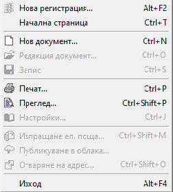
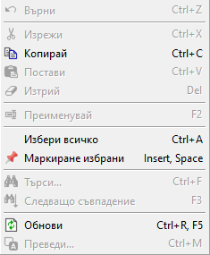
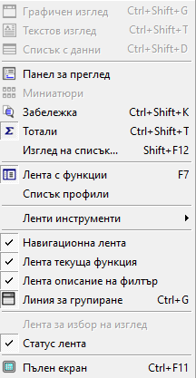
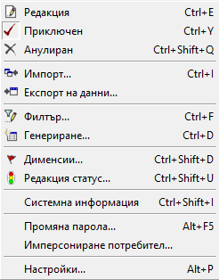
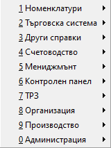
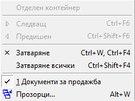
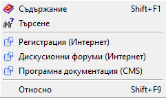
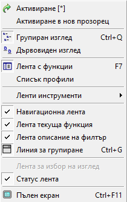

Характеристики на контейнера#
Контейнерът представлява основната форма на системата Dreem ERP. Отваря се при нейното стартиране и всички основни функционалности се изпълняват от него.
Съдържанието на контейнера включва: Лента с основно меню, Лента с инструменти, Лента с бутони по групи функции, Динамичен списък за визуализация на документи и Статус лента.
Лента с основно меню#
Основното меню се намира най-горе в контейнера, като обединява множество менюта за задаване на различни функции на форми и списъци.
Менютата от лентата с Основно меню са изнесени и разпределени между Лента с инструменти и Контекстно меню, което улеснява бързия достъп до тях.
{kind=link}
Файл - Системата активира единствено подменютата с достъпни опции. Възможните действия са различни и зависят както от текущо отворения списък, така и от маркираните записи/редове.

Нова регистрация - Затваря текущо стартираната база данни, след което предлага избор на нова база с въвеждане на входни данни - потребител и парола.
Начална страница - Отваря страницата, която системата зарежда по подразбиране при стартирането ѝ.
Нов… - Отваря форма за редакция на номенклатура или документ за добавяне на нов запис.
Редакция… - Отваря форма за редакция на маркираната номенклатура или документ в текущ списък.
Запис - Записва направените до момента промени.
Печат - Изпраща за печат списък или текущо маркираните записи.
Преглед - Показва на екран преглед за печат на списък или текущо маркираните записи.
Настройки - Отваря форма с настройки на принтер. Обикновено опцията е активна в справки.
Изпращане на ел. поща - Добавя един или множество документи в прикачен файл към нов имейл. За целта трябва да има настроен мейл клиент.
Публикуване в облака - Извършва електронен обмен на документи в отделна система. Необходими са допълнителни настройки.
Изход - Изход от системата
Редакция - Менюто предлага основни действия, свързани с маркирани текстове и записи.

Върни - Връща стъпка назад.
Изрежи - Изрязва маркиран текст или редове.
Копирай - Копира маркиран текст или редове.
Постави - Поставя последно копирани/изрязани данни.
Изтрий - Изтрива маркираните данни.
Преименувай - Дава възможност за промяна на името.
Избери всичко - маркира всички възможни записи.
Маркиране на избрани - Поставя “пин” върху предварително маркирани записи.
Търси - Търси съвпадение по текст.
Следващо съвпадение - Предлага следваш резултат от търсенето.
Обнови - Опреснява текущия списък.
Преведи - Предлага добавяне на чуждоезични настройки за някои номенклатури.
Изглед - Менюто предлага бързи настройки за промяна в изгледа на списъците.

Графичен изглед - Изглед в справките, съответстващ на преглед при печат.
Текстови изглед -
Списък с данни - Визуализиране на списъка с данни в табличен вид, позволяващ разместване, групиране, сортиране на колони и др.
Панел за преглед - Активира допълнително информационно поле вдясно, показващо избрани данни за текущо маркиран запис.
Миниатюри - Възможност за активиране на изглед Миниатюри, при който се визуализират настроени в записите изображения.
Забележка - Визуализира въведените забележки в списък.
Тотали - Включва/изключва показването на тотали за групировка в списък.
Изглед на списък - Отваря форма с настройки Изглед на списък за показване/скриване на колони, подредба и групиране на редове.
Лента с функции - Скрива/показва лентата с функции, разположена вляво в контейнера.
Списък профили - Скрива/показва полето, даващо възможност за навигация между профили (при работа в няколко бази данни едновременно).
Лента с инструменти - Настройки, касаещи лентата с инструменти, като активиране/деактивиране на стандартна лента, бърз филтър и други.
Навигационна лента - Скрива/показва лентата за навигация между отворени множество списъци.
Лента текуща функция - Скриване/показване на лентата, представяща наименование на текущо отворен списък.
Лента описание на филтър - Скриване/показване на филтър полето в жълт цвят от началото на текущия списък.
Линия за групиране - Скриване/показване на полето за извеждане на колона/и при активиране на групировка по тях. Появява се непосредствено под жълтото филтър поле.
Лента за избор на изглед - Скрива/показва поле за навигиране между Графичен изглед и Списък с данни в справки. Намира се непосредствено над статус лентата.
Статус лента - Скрива/показва статус лентата, намираща се най-долу в контейнера.
Пълен екран - Опция за едновременно скриване/показване на основното меню и на лентата с функционалности отляво. По този начин текущо стартираните списъци заемат целия екран.
Средства - Менюто включва различни средства, касаещи потребителските настройки на системата, импорт/експорт на данни, генерация на свързани документи и други.

Редакция / Приключен / Анулира - Опциите се активират в списъци с документи. Използват се за промяна на състоянието за маркиран документ.
Импорт - Опция за импорт на данни от външен файл. Активна е за избрани номенклатури и документи.
Експорт на данни - Опция за експорт на данни във файл с различен формат.
Филтър - Отваря форма Филтър за основно търсене.
Генериране - Отваря форма за създаване на свързани документи.
Дименсии - Отваря форма за редакция с предварително настроените в системата Дименсии. Опцията е активна за избрани номенклатури.
Редакция статус - Отваря форма за добавяне/промяна на документ статус. Активно е в списъци с документи.
Системна информация - Отваря информационна форма с дата, час и потребител, който е създал и редактирал последно избрания запис.
Промяна на парола - Отваря форма за смяна на потребителска парола.
Имперсониране на потребител - Възможност за имперсониране с настройки на друг потребител.
Настройки - Дава достъп до настройки, касаещи контейнера и списъците като цяло, регионални настройки и други.
Функции - подменютата на Функции дават достъп до всички функционалности на системата от лентата с бутони по групи функции: Номенклатури, Търговска система, Други справки, Счетоводство, Мениджмънт, Контролен панел, ТРЗ, Организация, Производство, Администрация.

Прозорци - Действията, които системата предлага, са свързани с текущо отворените списъци като отделни прозорци.

Отделен контейнер - Отваря избрани списъци в отделен контейнер.
Следващ - Преминава към следващия отворен списък/прозорец.
Предишен - Преминава към предходен списък (отворен прозорец).
Затваряне - Затваря текущия списък.
Затваряне всички - Затваря всички отворени прозорци.
Прозорци - Отваря форма със списък активни прозорци.
Помощ - Менюто дава достъп до търсене на допълнителна информация и инструкции за работа със системата.

Съдържание - Отваря помощна информация за работа с програмата.
Търсене - Предлага търсене на текст.
Регистрация - Отваря форма за регистрация при лицензионно споразумение за изтегляне на Dreem PERSONAL.
Дискусионни форуми - Достъп до поддържан от Униконт софт дискусионен форум, където може да получите информация и по индивидуални казуси.
Програмна документация - Препратка към инструкции за работа със системата.
Относно - Системна информаци за текуща версия на базата данни и др.
Лента с инструменти и бърз филтър#
Лентата се намира в горната част на контейнера,непосредствено под Лента с основно меню. В нея са изнесени от основното меню някои инструменти за въвеждане на функционалности на форми, списъци и документи.
{kind=link}
Лента с бутони по групи функции#
Намира се в лявата част на контейнера. Функционалностите на системата са обединени в групи функции, управляващи стопанската дейност на организацията: Номенклатури, Търговска система, Други справки, Счетоводство, Мениджмънт, Контролен панел, ТРЗ, Организация, Производство, Администрация.
{kind=link}
Динамичен списък за визуализация на документи#
Динамичният списък се намира в дясната част на контейнера. При избор на функционалност, списъкът се попълва с документи, като всеки ред от него представлява отделен документ.
За улеснение на потребителя те могат да се отварят чрез двоен щрак с мишката върху избран документ, а при десен щрак с мишката върху списъка се отваря контекстно меню с опции.
{kind=link}
Статус лента#
Статус лентата се намира най-долу в контейнера и изпълнява ролята на информационно поле. Съдържа информация за брой записи в текущия списък, времето, за което системата е заредила списъка, потребител на системата, текущата база с данни и дата.
{kind=link}
Функции в менюто на контейнера#
Менюто на контейнера се отваря чрез десен щрак с мишката върху Лента с функционалности вляво на контейнера.

Активиране — активиране на нова функционалност. Опция по подразбиране, при щрак с мишката (Настройки). Активира новата функционалност, като затваря старата.
Активиране в нов прозорец — активиране на нова функционалност в нов прозорец. Активира новата функционалност, като отваря нов прозорец за функцията. Така на практика има две или повече отворени функции на системата. Визуализацията на тези функции, както и навигацията между тях се осъществява през навигационната лента.
Групиран изглед — изглед на лентата с бутони. Активна опция по подразбиране. Визуализира лентата с бутони по групи функции.
Клавишна комбинация: Ctrl+Shift+QДървовиден изглед — изглед на лентата с бутони. Визуализира лентата с бутони в дървовидна структура.
Клавишна комбинация: Ctrl+Shift+WЛента с функции — показва/скрива лентата с бутони.
Клавишна комбинация:F7Списък с профили — показва/скрива списъка с профили. Системата позволява настройка на различни профили за работа (най-вече при използване на повече от една база данни). Чрез активиране на опцията списък профили, системата визуализира падащ прозорец с различни профили за смяна.
Лента инструменти — показва/скрива различните ленти с инструменти. При различни функционалности съществуват различни ленти с инструменти. Чрез опцията те се визуализират в допълнително меню, откъдето могат да бъдат показвани и скривани.
Навигационна лента — показва/скрива лентата за навигация. Лентата за навигация се използва при отваряне на функционалности в системата в нови прозорци (виж точка 2). Чрез нея можете да се навигирате бързо и удобно във всяка отворена функция.
Лента текуща функция — показва/скрива наименованието на текущата функция.
Лента описание на филтър — показва/скрива жълтата лента на активния филтър. Визуализира съдържанието на активния филтър.
Линия за групиране — показва/скрива линията за групиране на списък.
Клавишна комбинация: Ctrl+GЛента за избор на изглед — показва/скрива лентата за избор на изглед в справките.
Статус лента — показва/скрива статус лентата.
Пълен екран — показва/скрива бутон за визуализация на пълен екран.
Клавишна комбинация: Ctrl+F11